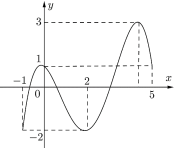
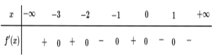
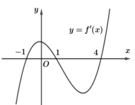
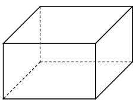

Thời gian làm bài: 90 phút

Lời giải Từ đồ thị ta thấy: $\left\{ \begin{align} & M=\underset{\left[ -1;5 \right]}{\mathop{\max }}\,f\left(x \right)=3\\ & n=\underset{\left[ -1;5 \right]}{\mathop{\min }}\,f\left(x \right)=-2\\ \end{align} \right.\Rightarrow M+n=1.$
Lời giải Ta có: ${v\left(t \right)=-3{{t}^{2}}+12t+1\Rightarrow {v}'\left(t \right)=-6t+12=0\Leftrightarrow t=2}$. Bảng biến thiên:
Lời giải Ta có: ${{y}'=4{{x}^{3}}-16x=0\Leftrightarrow 4{{x}^{3}}-16x=0\Leftrightarrow \left[ \begin{align} & x=-2\notin \left[ -1;1 \right]\\ & x=2\notin \left[ -1;1 \right]\\ & x=0\in \left[ -1;1 \right]\\ \end{align} \right.}$. Khi đó: ${f\left(-1 \right)=10}$ ;${f\left(1 \right)=10}$ ;${f\left(0 \right)=17}$. Vậy ${\underset{\left[ -1;1 \right]}{\mathop{\max }}\,y=f\left(0 \right)=17}$.
Lời giải Đặt $t=\sin x$, $t\in \left[ 0\,;\,1 \right]$. Xét hàm $f\left(t \right)=\frac{3t+2}{t+1}$ liên tục trên đoạn $\left[ 0\,;\,1 \right]$ có ${f}'\left(t \right)=\frac{1}{{{\left(t+1 \right)}^{2}}}>0\,,\,t\in \left[ 0\,;\,1 \right]$ nên hàm số đồng biến trên $\left[ 0\,;\,1 \right]$${\Rightarrow M=\underset{\left[ 0;1 \right]}{\mathop{\text{max}}}\,f\left(t \right)=f\left(1 \right)=\frac{5}{2}}$ và ${m=\underset{\left[ \text{0;1} \right]}{\mathop{\text{min}}}\,f\left(t \right)=f\left(0 \right)=2}$. Khi đó: ${{M}^{2}}+{{m}^{2}}={{\left(\frac{5}{2} \right)}^{2}}+{{2}^{2}}=\frac{41}{4}$.

Lời giải Dựa vào bảng biến thiên ta có: ${\underset{\left(-1;+\infty \right)}{\mathop{\max }}\,y=f\left(0 \right)}$
Lời giải Ta có:${{y}'=1-\frac{4}{{{x}^{2}}}}$${=0}$${\Leftrightarrow 1-\frac{4}{{{x}^{2}}}=0}$${\Leftrightarrow \left[ \begin{align} & x=2\in \left[ 1;3 \right]\\ & x=-2\notin \left[ 1;3 \right]\\ \end{align} \right.}$. Khi đó ${y\left(1 \right)=5}$;${y\left(2 \right)=4}$;${y\left(3 \right)=\frac{13}{3}}$. Vậy $\underset{\left[ 1;3 \right]}{\mathop{\max }}\,y=5$.
Lời giải Ta có: ${f}'\left(x \right)=3{{x}^{2}}-3$$=0$$\Leftrightarrow $$\left[ \begin{align} & x=-1\,\,\,\\ & x=1\,\,\\ \end{align} \right.$. Ta có: $f\left(-3 \right)=-16$; $f\left(3 \right)=20$; $f\left(-1 \right)=4$; $f\left(1 \right)=0$. Vậy $\underset{\left[ -3;3 \right]}{\mathop{\min }}\,f\left(x \right)=-16$.
Lời giải Ta có ${y}'=\frac{1-m}{{{\left(x+1 \right)}^{2}}}$. Nếu $m=1\Rightarrow y=1,\text{ }\forall x\ne -1$ suy ra không thỏa mãn yêu cầu đề bài. Nếu $m<1$$\Rightarrow $Hàm số đồng biến trên đoạn $\left[ 1;2 \right]$. Khi đó: ${\underset{\left[ 1;2 \right]}{\mathop{\min }}\,y+\underset{\left[ 1;2 \right]}{\mathop{\max }}\,y=\frac{16}{3}}$${\Leftrightarrow y\left(1 \right)+y\left(2 \right)=\frac{16}{3}\Leftrightarrow \frac{m+1}{2}+\frac{m+2}{3}=\frac{16}{3}\Leftrightarrow m=5}$ (loại). Nếu $m>1$$\Rightarrow $Hàm số nghịch biến trên đoạn $\left[ 1;2 \right]$. Khi đó: ${\underset{\left[ 1;2 \right]}{\mathop{\min }}\,y+\underset{\left[ 1;2 \right]}{\mathop{\max }}\,y=\frac{16}{3}\Leftrightarrow y\left(2 \right)+y\left(1 \right)=\frac{16}{3}\Leftrightarrow \frac{2+m}{3}+\frac{1+m}{2}=\frac{16}{3}\Leftrightarrow m=5}$(t/m)
Lời giải Tập xác định: $D=\mathbb{R}\backslash \left\{ -1 \right\}$. Hàm số đã cho liên tục trên $\left[ 0;\,1 \right]$. Ta có: ${y}'=\frac{1-\left(-{{m}^{2}}+m \right)}{{{\left(x+1 \right)}^{2}}}=\frac{{{m}^{2}}-m+1}{{{\left(x+1 \right)}^{2}}}>0$; $\forall x\in D$$\Rightarrow $ Hàm số đồng biến trên đoạn $\left[ 0;\,1 \right]$. Trên $\left[ 0;\,1 \right]$ hàm số đạt giá trị nhỏ nhất tại $x=0$. Ta có:$y\left(0 \right)=-2\Leftrightarrow -{{m}^{2}}+m=-2\Leftrightarrow {{m}^{2}}-m-2=0\Leftrightarrow \left[ \begin{matrix} m=-1\\ m=2\\ \end{matrix} \right.$.
Lời giải Ta có: $v\left(t \right)={s}'\left(t \right)=-{{t}^{2}}+12t$; ${v}'\left(t \right)=-2t+12$; ${v}'\left(t \right)=0\Leftrightarrow t=6$. Bảng biến thiên: Nhìn bảng biến thiên ta thấy vận tốc đạt giá trị lớn nhất khi $t=6$. Giá trị lớn nhất là $v\left(6 \right)=36\text{m/s}$.
Lời giải Gọi ${x,\ y}$${\left(x>0 \right.}$, ${y>0}$, đơn vị m) là chiều dài và chiều rộng của đáy bể. Khi đó theo đề ta suy ra ${0,6xy=0,096\Leftrightarrow y=\frac{0,16}{x}}$. Giá thành của bể cá được xác định theo hàm số sau: ${f\left(x \right)=2.0,6\left(x+\frac{0,16}{x} \right).70000+100000.x.\frac{0,16}{x}}$ ${\Leftrightarrow f\left(x \right)=84000\left(x+\frac{0,16}{x} \right)+16000}$ Ta có ${{f}'\left(x \right)=84000\left(1-\frac{0,16}{{{x}^{2}}} \right)\Rightarrow {f}'\left(x \right)=0\Leftrightarrow x=0,4}$ với ${x\in \left(0;+\infty \right)}$ Bảng biến thiên: Dựa vào bảng biến thiên suy ra chi phí thấp nhất để hoàn thành bể cá là ${f\left(0,4 \right)=83200}$ VNĐ.
Lời giải Tập xác định: $D=\mathbb{R}\backslash \left\{ {{m}^{2}} \right\},\left[ -3;-2 \right]\subset D$. Ta có ${y}'=\frac{-{{m}^{2}}-1}{{{\left(x-{{m}^{2}} \right)}^{2}}}<0,\forall x\in D$ nên hàm số nghịch biến trên từng khoảng xác định. Khi đó: $\underset{\left[ -3;-2 \right]}{\mathop{\min }}\,y=\frac{1}{2}=y\left(-2 \right)=\frac{-2+1}{-2-{{m}^{2}}}\Rightarrow -2-{{m}^{2}}=-2\Leftrightarrow m=0\Rightarrow -2

Lời giải: Lời giảiSai: Hàm số đã cho có ba điểm cực trịSai: Trên $\left(1;+\infty \right)$ thì hàm số nghịch biến trên khoảng $\left(1\, & ;\,4 \right)$Đúng:$f\left(1 \right)>f\left(2 \right)>f\left(4 \right).$ Dựa vào đồ thị của hàm số $y={f}'\left(x \right)$ ta thấy: ${f}'\left(x \right)=0\Leftrightarrow \left[ \begin{align} & x=-1\\ & x=1\\ & x=4\\ \end{align} \right.$ ${f}'\left(x \right)<0\Leftrightarrow x\in \left(-\infty ;-1 \right)\cup \left(1;4 \right)$; ${f}'\left(x \right)>0\Leftrightarrow x\in \left(-1;1 \right)\cup \left(4;+\infty \right)$ Ta có bảng biến thiên của hàm số $y=f\left(x \right)$ Đúng: Trên đoạn $\left[ -1;4 \right]$ thì giá trị lớn nhất của hàm số $y=f\left(x \right)$ là $f\left(1 \right).$
Lời giải: Lời giảiSai: Tập xác định: $D=\mathbb{R}\backslash \left\{ m \right\}$. Ta có: ${y}'=\frac{{{m}^{2}}-m+2}{{{\left(x-m \right)}^{2}}}>0,\forall x\ne m$. Do đó hàm số đồng biến trên mỗi khoảng $\left(-\infty ;m \right)$ và $\left(m;+\infty \right)$.Đúng: Bảng biến thiên của hàm số: Sai: Từ bảng biến thiên suy ra, hàm số đạt giá trị lớn nhất trên đoạn $\left[ 0;\,4 \right]$ bằng $-1$ khi $\left\{ \begin{align} & m<0\\ & f\left(4 \right)=-1\\ \end{align} \right.$Đúng: $\Leftrightarrow \left\{ \begin{align} & m<0\\ & \frac{2-{{m}^{2}}}{4-m}=-1\\ \end{align} \right.$$\Leftrightarrow \left\{ \begin{align} & m<0\\ & {{m}^{2}}+m-6=0\\ \end{align} \right.$$\Leftrightarrow \left\{ \begin{align} & m<0\\ & m=2,m=-3\\ \end{align} \right.$$\Leftrightarrow m=-3$.
Lời giải: Lời giảiĐúng: Ta có: ${y}'=3{{x}^{2}}-6mx+3\left({{m}^{2}}-1 \right)=0\Leftrightarrow \left[ \begin{align} & {{x}_{1}}=m-1\\ & {{x}_{2}}=m+1\\ \end{align} \right.$.Sai: Để hàm số có giá trị nhỏ nhất trên khoảng $\left(0;+\infty \right)$ thì ${{x}_{1}}\le 0<{{x}_{2}}$ hoặc $0<{{x}_{1}}<{{x}_{2}}$.Đúng: Trường hợp 1: ${{x}_{1}}\le 0<{{x}_{2}}$$\Leftrightarrow m-1\le 0 Bảng biến thiên của hàm số: Trường hợp 2: $0<{{x}_{1}}<{{x}_{2}}$. Bảng biến thiên của hàm số Sai: Hàm số có giá trị nhỏ nhất trên khoảng $\left(0;+\infty \right)$ khi và chỉ khi $\left\{ \begin{align} & m-1>0\\ & y\left(m+1 \right)\le y\left(0 \right)\\ \end{align} \right.$. $\Leftrightarrow \left\{ \begin{align} & m>1\\ & {{\left(m+1 \right)}^{3}}-3m{{\left(m+1 \right)}^{2}}+3\left({{m}^{2}}-1 \right)\left(m+1 \right)+2025\le 2025\\ \end{align} \right.$$\Leftrightarrow \left\{ \begin{align} & m>1\\ & {{\left(m+1 \right)}^{2}}\left(m-2 \right)\le 0\\ \end{align} \right.$ $\Leftrightarrow \left\{ \begin{align} & m>1\\ & \left[ \begin{align} & m\le 2\\ & m=-1\\ \end{align} \right.\\ \end{align} \right.$$\Leftrightarrow 1
Lời giải: Lời giảiĐúng: $h\left(t \right)=-0,01{{t}^{3}}+1,1{{t}^{2}}-30t+250\Rightarrow {h}'\left(t \right)=-0,03{{t}^{2}}+2,2t-30=0\Leftrightarrow \left[ \begin{align} & t=55\notin \left(0;50 \right)\\ & t=18\in \left(0;50 \right)\\ \end{align} \right.$ Sai: Dựa vào bảng biến thiên trên ta thấy trong $50$ giây đầu tiên kể từ khi đốt cháy các tên lửa hãm, độ cao thấp nhất mà con tàu đạt được tại thời điểm $t\approx 18\left(s \right)$.Đúng: $h\left(t \right)=-0,01{{t}^{3}}+1,1{{t}^{2}}-30t+250\Rightarrow v\left(t \right)={h}'\left(t \right)=-0,03{{t}^{2}}+2,2t-30$ $\Rightarrow a\left(t \right)={v}'\left(t \right)=-0,06t+2,2=0\Leftrightarrow t\approx 37$ Vận tốc của con tàu lớn nhất mà con tàu đạt được là $10,33\,\left(km/s \right)$.Sai: $h\left(t \right)=-0,01{{t}^{3}}+1,1{{t}^{2}}-30t+250\Rightarrow v\left(t \right)={h}'\left(t \right)=-0,03{{t}^{2}}+2,2t-30$ $\Rightarrow a\left(t \right)={v}'\left(t \right)=-0,06t+2,2=0\Leftrightarrow t\approx 37$ Khi đó: ${{v}_{\text{max}}}=10,33\Leftrightarrow t\approx 37;\,\,\,\,h\left(37 \right)=139,37$km.
Lời giải: Lời giải Tập xác định của hàm số $D=\mathbb{R}\backslash \left\{ -1 \right\}$. Ta có ${y}'=\frac{1-m}{{{\left(x+1 \right)}^{2}}}$. $f\left(1 \right)=\frac{1+m}{2};f\left(2 \right)=\frac{2+m}{3}$. $\underset{\left[ 1;2 \right]}{\mathop{\min }}\,f\left(x \right)=\min \left\{ f\left(1 \right);f\left(2 \right) \right\}$ và $\underset{\left[ 1;2 \right]}{\mathop{\text{max}}}\,f\left(x \right)=m\text{ax}\left\{ f\left(1 \right);f\left(2 \right) \right\}$. Khi đó, theo đề ta có $\underset{\left[ 1;2 \right]}{\mathop{\text{max}}}\,f\left(x \right)\text{+}\underset{\left[ 1;2 \right]}{\mathop{\text{min}}}\,f\left(x \right)=8$ $\Leftrightarrow \frac{2+m}{3}+\frac{1+m}{2}=8\Leftrightarrow \frac{5m+7}{6}=8$ $\Leftrightarrow 5m+7=48\Leftrightarrow m=\frac{41}{5}$.

Lời giải: Lời giải Gọi chiều rộng của bể là $3x\text{ }\left(m \right)$. Ta có chiều dài bể là $4x\text{ }(m)$ và chiều cao của bể là $\frac{2}{3{{x}^{2}}}\text{ }\left(m \right)$ Khi đó tổng diện tích bề mặt xây là: $T=\left(3x+4x \right).2.\frac{2}{3{{x}^{2}}}+2.3x.4x-\frac{2}{9}.3x.4x=\frac{28}{3{{x}^{2}}}+\frac{64{{x}^{2}}}{3}\ge 2.\sqrt{\frac{28}{3{{x}^{2}}}.\frac{64{{x}^{2}}}{3}}=\frac{32\sqrt{7}}{3}\text{ }\left({{m}^{2}} \right)$. Chi phí $C$ (tính theo đồng) xây dựng là: $C=T.980000\ge \frac{32\sqrt{7}}{3}.980000\approx 27657000$ (đồng). Vậy chi phí thấp nhất mà ông Nam phải chi trả là $28$ triệu đồng.
Lời giải: Lời giải Ta có $v={S}'\left(t \right)=12t-3{{t}^{2}}$ suy ra ${v}'\left(t \right)=12-6t$ nên ${v}'\left(t \right)=0\Leftrightarrow t=2$. Bảng biến thiên: Do vậy ${{v}_{\max }}=12\,\left(m/s \right)$ tại $t=2\,\left(s \right)$.
Lời giải: Lời giải Ta có $f\left(x \right)=\frac{1}{2}x-\sqrt{x+1}$$\Rightarrow {f}'\left(x \right)=\frac{1}{2}-\frac{1}{2\sqrt{x+1}}=\frac{\sqrt{x+1}-1}{2\sqrt{x+1}}$. Ta có: ${f}'\left(x \right)=0\Leftrightarrow \sqrt{x+1}=1\Leftrightarrow x=0$. Ta có $f\left(0 \right)=-1\,;\,f\left(3 \right)=-\frac{1}{2}$ và hàm số $f\left(x \right)$ liên tục trên đoạn $\left[ 0;3 \right]$. Vậy $M=-\frac{1}{2};\,m=-1\Rightarrow S=2M-m=2\left(-\frac{1}{2} \right)+1=0$.
Lời giải: Lời giải Một máy in trong một giờ in được $3600$ tờ nên in $50\,\,000$ tờ cần $\frac{125}{9}$ giờ Vậy nên $n$ máy cần thời gian in là $\frac{125}{9n}$ giờ Khi đó tổng chi phí là: $f\left(n \right)=\left[ 10\left(6n+10 \right) \right].1000+50\,000n$ Khi đó để được lãi nhiều nhất thì $f\left(n \right)$ đạt giá trị nhỉ nhất với $n\in \left[ 1\,;\,8 \right]$ và $n\in \mathbb{N}$ Áp dụng bất đẳng thức Cauchy: $f\left(n \right)=\left(\frac{250}{3}+\frac{1250}{9n}+5n \right).10\,\,000\ge \left(\frac{250}{3}+\frac{50\sqrt{10}}{3} \right)$ Do đó $f\left(n \right)$ nhỏ nhất khi $\frac{1250}{9n}=4n\Leftrightarrow n=\frac{5\sqrt{5}}{10}\approx 5$ Vậy cần dùng $5$ máy in thì thu được tiền lãi là nhiều nhất.
Lời giải: Lời giải Ta có ${f\left(x \right)={{x}^{3}}+\left(1+{{m}^{2}} \right)x+1\Rightarrow f'\left(x \right)=3{{x}^{2}}+1+{{m}^{2}}>0,\,\,x\in \mathbb{R}}$ do đó hàm số đồng biến trên $\left[ 0;\,1 \right]$ $\underset{\left[ 0;\,1 \right]}{\mathop{\max }}\,f\left(x \right)=f\left(1 \right)={{m}^{2}}+3$. Yêu cầu bài toán tương đương ${{m}^{2}}+3\le 7\Leftrightarrow -2\le m\le 2.$ Vậy $S=\left\{ -2,-1,0,1,2 \right\}$ hay $S$ có 5 phần tử.
Vui lòng kéo lên trên để xem chi tiết lời giải từng câu hỏi.